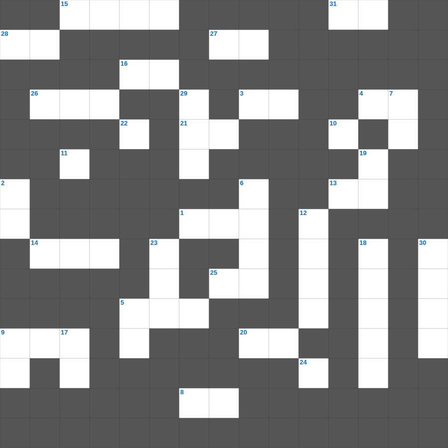

요한계시록 마스터 100
📌 서비스 정의
십자가로세로는 교회 주보와 주일학교에서 사용할 수 있는 성경 기반 가로세로 퍼즐 서비스입니다. 성경 인물, 사건, 핵심 구절을 바탕으로 제작되었습니다. 온라인 풀이 및 인쇄 기능을 제공합니다.
📖 요한계시록란?
요한계시록은 사도 요한이 받은 환상을 통해 일곱 교회를 향한 메시지와 마지막 때의 심판, 그리고 새 하늘과 새 땅에서의 영원한 소망을 보여주는 예언서입니다.
📚 요한계시록의 주요 사건·주제
일곱 교회를 향한 편지 · 보좌와 어린양 환상 · 일곱 인과 일곱 나팔 심판 · 짐승과 음녀에 대한 심판 · 새 하늘과 새 땅, 새 예루살렘
무료로 즐기는 요한계시록 요한계시록 말씀 퀴즈! 35개의 힌트로 구성된 가로세로 낱말 퍼즐입니다. PC와 모바일 모두 지원되며, 정답을 바로 확인할 수 있어 혼자서도 쉽게 풀 수 있습니다.

📝 가로 힌트
1. 빌립보에서 만난 자색 옷감 장사로 온 집이 세례를 받은 여인
3. 그러나 여호와여, 이제 주는 우리 아버지시니이다 우리는 이것이요 주는 토기장이시니
4. 나는 네가 이것할 것을 확신하므로 네게 썼노니 네가 내가 말한 것보다 더 행할 줄을 아노라
5. 내가 옷을 벗었으니 어찌 다시 입겠으며 내가 이것을 씻었으니 어찌 다시 더럽히랴마는
5. 여인 중에 어여쁜 자야 네가 알지 못하겠거든 양 떼의 이것을 따라가라
8. 살아 있는 사람은 자기 죄들 때문에 벌을 받나니 어찌 이것 하랴
9. 누가복음의 핵심 주제 중 하나로, 구원의 보편성을 나타내는 대상
10. 너희가 도리어 말하기를 주의 이것이면 우리가 살기도 하고 이것저것을 하리라 할 것이거늘
11. 너울 속의 네 이것은 석류 한 쪽 같구나
13. 하늘은 나의 보좌요 땅은 나의 이것이니 너희가 나를 위하여 무슨 집을 지으랴
14. 예레미야가 전한 새 언약이 기록될 장소
15. 우매한 자의 입술들은 자기를 이것 하느니라
16. 가난한 자를 학대하는 자는 그를 지으신 이를 이것 하는 것이요
20. 한 사람이면 패하겠거니와 두 사람이면 맞설 수 있나니 이것 줄은 쉽게 끊어지지 아니하느니라
21. 내 사랑하는 자는 노루와도 같고 어린 이것과도 같아서
25. 그는 멸시를 받아 사람들에게 버림받았으며 이것을 많이 겪었으며 질고를 아는 자라
26. 그를 내게 머물러 있게 하여 내가 복음을 위하여 갇힌 중에서 네 대신 나를 이것하게 하고자 하나
27. 마가복음 16장 17절, 믿는 자들에게 따르는 표적 중 하나: 새 이것을 말하며
28. 너의 사랑하는 자가 남의 사랑하는 자보다 나은 것이 무엇이기에 이같이 우리에게 이것 하는가
31. 보라 아버지께서 어떠한 사랑을 우리에게 베푸사 하나님의 이것이라 일컬음을 받게 하셨는가
📝 세로 힌트
2. 우리가 잠시 받는 환난의 경한 것이 지극히 크고 영원한 이것의 중한 것을 우리에게 이루게 함이니
5. 유다서 1장 11절: 삯을 위하여 누구의 어그러진 길로 몰려갔나
6. 해는 뜨고 해는 지되 그 떴던 곳으로 빨리 이것하도다
7. 네 키는 이것 나무 같고 네 유방은 그 열매 송이 같구나
9. 세상을 이기는 승리는 이것이니 우리의 믿음이니라
12. 네 입술은 좋은 포도주 같을 것이니라 이 포도주는 내 사랑하는 자를 위하여 이것하게 흘러내려서
17. 너희 믿음의 시련이 무엇을 만들어 내는 줄 너희가 아느니라
18. 여호와께서 호세아에게 이르시되 너는 가서 음란한 여자를 맞이하여 이것들을 낳으라
19. 한 번 죽는 것은 사람에게 정해진 것이요 그 후에는 이것이 있으리니
21. 큰 잔치 비유: 사람들이 다 일치하게 이것 하여 이르되 나는 밭을 샀으매
22. 지혜자가 우매자보다 뛰어남이 이것이 어둠보다 뛰어남 같도다
23. 그들이 섬기는 것은 하늘에 있는 것의 모형과 이것이라
24. 내 나라는 이 세상에 이것한 것이 아니니라
29. 이는 한 아기가 우리에게 났고 한 아들을 우리에게 주신 바 되었는데 그의 어깨에는 이것을 메었고
30. 슬프다 이 성이여 전에는 사람들이 많더니 이제는 어찌 그리 이것 앉았는고
🧩 이 퍼즐에서 배우는 내용
이 퍼즐은 요한계시록 마스터 100의 핵심 단어와 개념을 자연스럽게 복습할 수 있도록 구성되었습니다. 주일학교 수업이나 개인 성경공부에서 학습 내용을 점검하는 용도로 바로 활용할 수 있습니다.
🧑🏫 교회 교육 자료 활용
이 퍼즐은 주일학교 교재 추천 자료로 활용할 수 있고, 주일학교 주보에 넣기 좋은 분량으로 구성되어 있습니다. 수업용 주일학교 교안에 활동지로 붙이거나, 예배 후 복습용 주일학교 공과교재로 바로 사용할 수 있습니다.
🏷️ 키워드
요한계시록 말씀 퀴즈, 요한계시록, 십자가로세로, 성경퀴즈, 말씀퀴즈, 가로세로퍼즐, 주일학교 교재 추천, 주일학교 주보, 주일학교 교안, 주일학교 공과교재